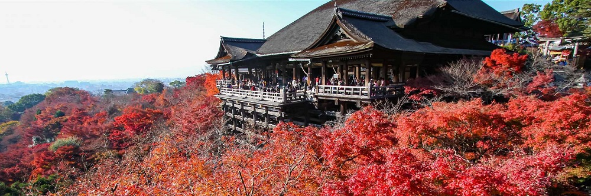

Kyoto
Página Inicial | Localização | Locais Turísticos | Histórias Rurais
Kyoto é uma cidade do Japão. A cidade Kyoto foi fundada no século I, por mais de um milênio Kyoto foi a capital da Corte Imperial do Japão, de 794 a 1868 até ser substituída por Tóquio.
Pré-história/O Passado
⛩️ Kyoto foi fundada em 794 d.C. pelo imperador Kanmu, e foi originalmente chamada de Heian-kyō, que significa "Capital da Paz e Tranquilidade". A decisão de mover a capital para Heian-kyō foi motivada por razões políticas e espirituais, incluindo o desejo de afastar-se da influência dos mosteiros budistas em Nara. Heian-kyō foi construída com base em princípios de geomancia chinesa e organizada em um padrão de grade, inspirada na antiga capital chinesa de Chang'an.
- Página Inicial sobre Kyoto
- Localização de Kyoto
- Locais Turísticos Fotografias e locais turísticos mais visitados de Kyoto
- Histórias Rurais de Kyoto